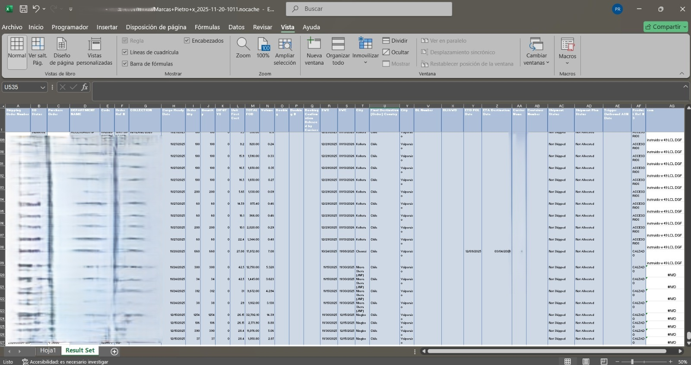
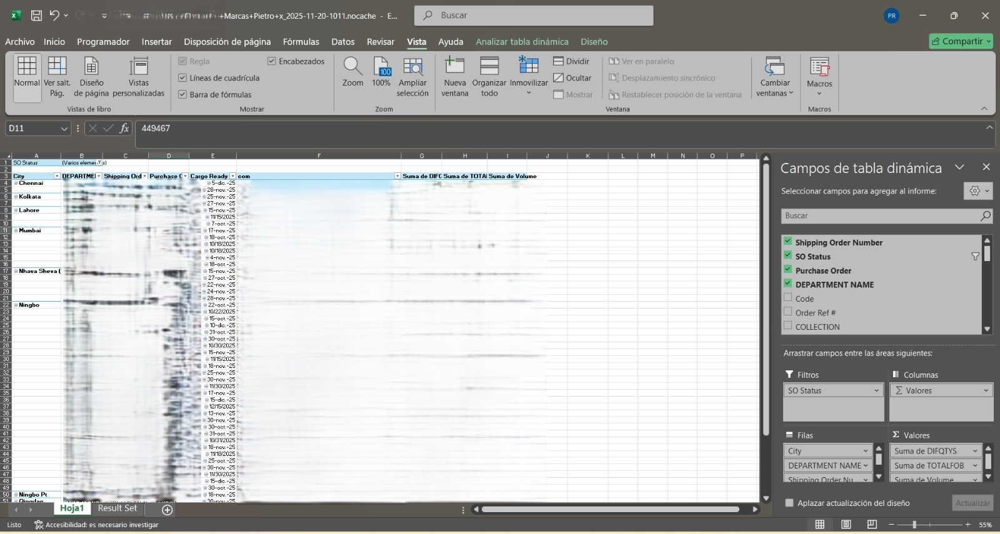
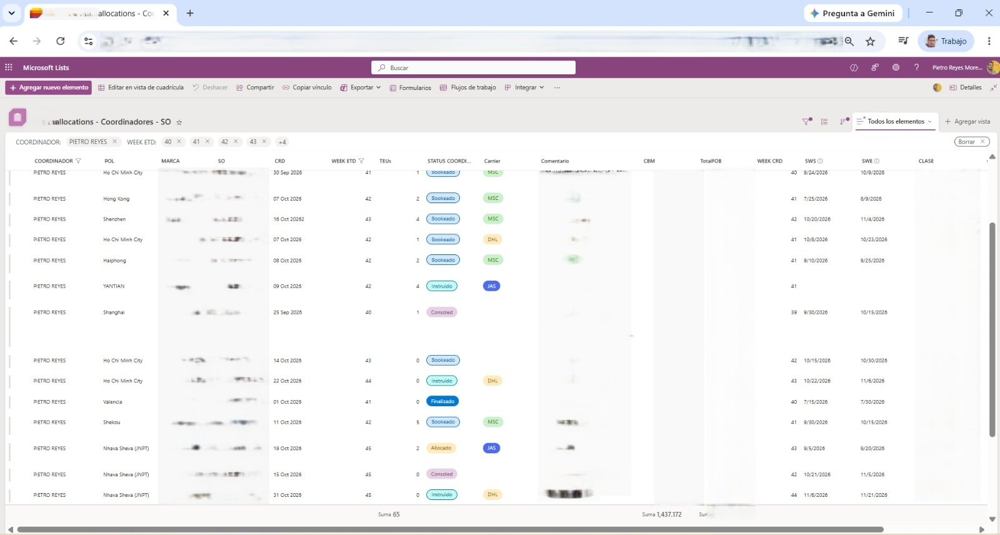

The problem
The team would check every shipment by manually cross-referencing an Excel report against that same report from the day before. Before they could even start working with the data, they had to run a query, format the report, cross-check the information with VLOOKUP — often fixing some lookup error along the way — build a pivot table, reorder the information, and verify that the previous days' comments had carried over. All of this before actually starting to work with the day's data: between 30 and 45 minutes per person, per day (estimated by each coordinator, then timed over several days to get a real average).
Leaving a comment on a Shipping Order (SO) was a separate process altogether: you had to leave the pivot table, find the SO in the raw data table, scroll to the last column, write the comment, then copy and paste it manually into every row tied to that same SO.


What I did and why
I proposed migrating tracking to SharePoint and, together with the team, designed and built the consolidated data flow that replaced that whole manual process, with two automatic daily refreshes — at 7:00am and 1:00pm — scheduled so the information is ready when the team arrives in the morning and again when they're back from lunch.
The result
Today the coordinator doesn't spend time loading or cross-checking data — they just review and log comments or manual changes. The whole team adopted the flow in about a month, including the full switch-over from the manual spreadsheets.

What I learned
Changing tools isn't enough if it doesn't also fix the invisible steps of the process — like leaving a comment. Designing the whole flow, not just the data upload, is what got the team to adopt it without resistance.